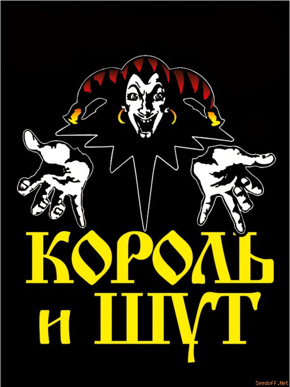
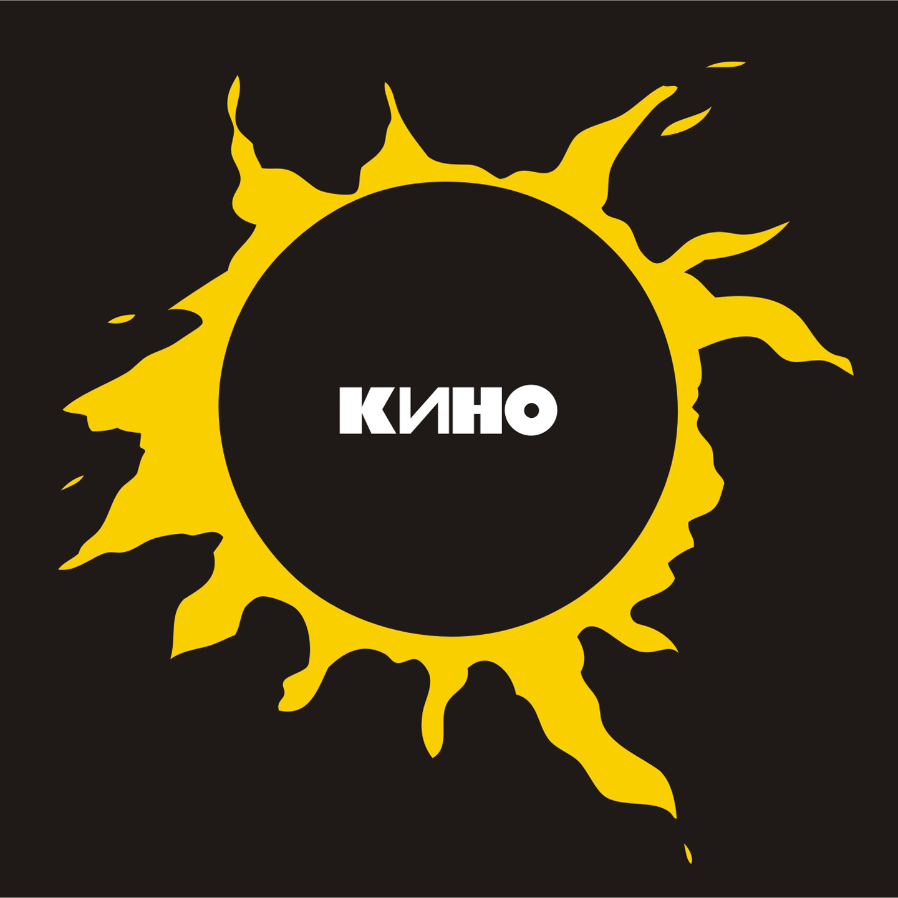

«Король и Шут» (сокращённо «КиШ») — советская и российская хоррор-панк-группа из Санкт-Петербурга. Группа была образована в Ленинграде в 1988 году.
После смерти её лидера и одного из основателей Михаила Горшенёва 19 июля 2013 года выступает только в рок-мюзикле TODD.Выделяется своим необычным для классического панк-рока стилем.
Песни группы представляют собой небольшие законченные истории, часто в фэнтезийном, мистическом, а также историческом и ужасающем ключе.
Сценический имидж группы постоянно менялся и часто включал в себя грим, соответствующий тематике песен. В прессе группа неоднократно обозначалась как «культовая»
Изначально преобладающий в музыкальной составляющей ритмичный хоррор-панк со временем вышел за границы стиля и вобрал в себя множество музыкальных элементов: фолк-рок («Акустический альбом»), арт-панк («Театр демона»), хардкор-панк («Бунт на корабле»), хард-рок («Как в старой сказке») и многие другие.
За 26 лет своего существования группа выпустила 12 студийных альбомов, 2 сборника и 5 концертных альбомов.
«Кино́» (раннее название — «Га́рин и гиперболо́иды») — одна из самых популярных советских рок-групп 1980-х годов, входившая в состав ленинградского рок-клуба.
Лидером группы и автором текстов песен и музыки, исполняемых ею на концертах, неизменно оставался Виктор Цой, после смерти которого (в 1990 году) коллектив, выпустивший, в общей сложности, за 9 лет в студийных альбомах более 100 песен, несколько сборников и концертных записей, а также большое количество неофициальных бутлегов, надолго прекратил существование.
Стилистически группа ушла от многих традиционных элементов русского рока, в частности, вместо обычных ударных установок нередко использовались разнообразные программируемые эффекты, создаваемые посредством драм-машин, что порой придавало звучанию «налёт дискотечности» или «попсовости».
Тематическая составляющая лирики группы на раннем этапе её творчества отражает подростковую обыденность и драматические переживания по поводу любви, благодаря чему музыканты были удостоены звания «новые романтики»; в более же поздних текстах героика и протест сочетаются с трагичностью мироощущения.
«Гражда́нская оборо́на» (известная также в сокращении как «ГрОб» и «ГО») — советская и российская рок-группа, основанная 8 ноября 1984 года в Омске Егором Летовым и Константином Рябиновым, наиболее заметная представительница сибирского панк-рока.
Музыка коллектива на начальном этапе представляла собой панк-рок с сильным гаражным влиянием, сохранявшимся на всём протяжении творческой деятельности группы, а в 1990-х годах её стилистика сместилась в сторону психоделического рока.
«Гражданская оборона» являлась одной из наиболее влиятельных панк-рок-групп СССР и России. Группа распалась в 2008 году после смерти Егора Летова.